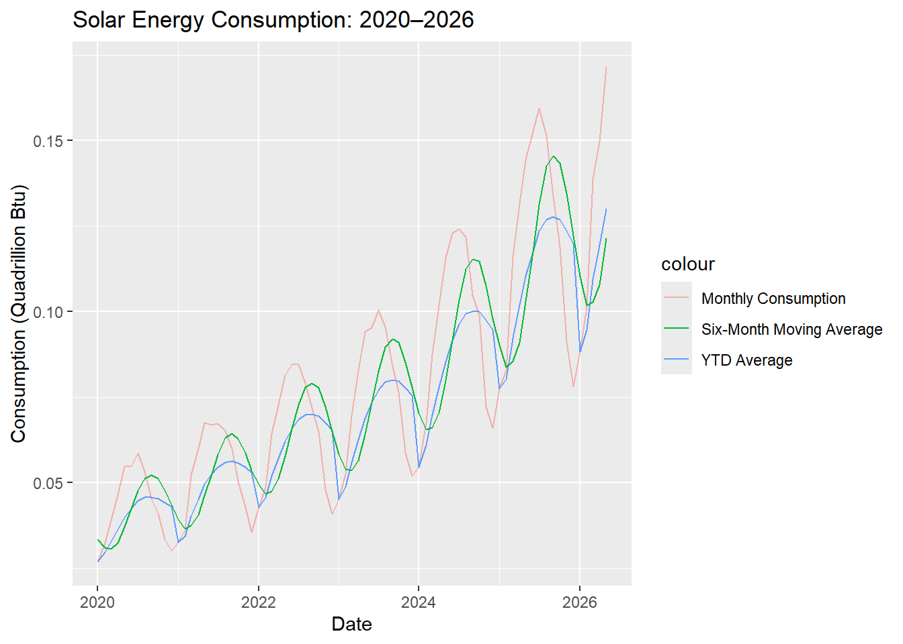
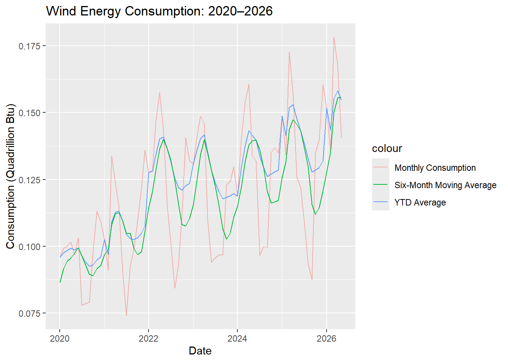

For Assignment 3B, I will use the U.S. Energy Information Administration’sTotal energy consumption of renewable and nonrenewable energy sources data set that I used for Assignment 1. Because this data set does not have daily points, only yearly and monthly data, I will calculate the year-to-date average and the six-month moving averages, instead of six-day, for two items, Solar and Wind energy consumption. I will use window functions in dplyr, because I prefer working in R.
Code Base Deliverable
Load library
library(tidyverse)
── Attaching core tidyverse packages ──────────────────────── tidyverse 2.0.0 ──
✔ dplyr 1.2.1 ✔ readr 2.2.0
✔ forcats 1.0.1 ✔ stringr 1.6.0
✔ ggplot2 4.0.3 ✔ tibble 3.3.1
✔ lubridate 1.9.5 ✔ tidyr 1.3.2
✔ purrr 1.2.2
── Conflicts ────────────────────────────────────────── tidyverse_conflicts() ──
✖ dplyr::filter() masks stats::filter()
✖ dplyr::lag() masks stats::lag()
ℹ Use the conflicted package (<http://conflicted.r-lib.org/>) to force all conflicts to become errors
Read data from GitHub
Original file is a xlsx with two tabs. I saved the “Monthly Data” as a csv and stored it on GitHub, I used the skip argument in the read_csv() function to omit the first rows of metadata.
Rows: 642
Columns: 13
$ Month <chr> NA, "…
$ `Coal Consumption` <chr> "(Qua…
$ `Natural Gas Consumption (Excluding Supplemental Gaseous Fuels)` <chr> "(Qua…
$ `Petroleum Consumption (Excluding Biofuels)` <chr> "(Qua…
$ `Total Fossil Fuels Consumption` <chr> "(Qua…
$ `Nuclear Electric Power Consumption` <chr> "(Qua…
$ `Hydroelectric Power Consumption` <chr> "(Qua…
$ `Geothermal Energy Consumption` <chr> "(Qua…
$ `Solar Energy Consumption` <chr> "(Qua…
$ `Wind Energy Consumption` <chr> "(Qua…
$ `Biomass Energy Consumption` <chr> "(Qua…
$ `Total Renewable Energy Consumption` <chr> "(Qua…
$ `Total Primary Energy Consumption` <chr> "(Qua…
Cleaning and transformation process
I used row indexing to remove the first row after headers which was unnecessary for this analysis, and saved the updated data frame to a new one called df.
df <- df_raw[-1,] glimpse(df)
Rows: 641
Columns: 13
$ Month <chr> "1973…
$ `Coal Consumption` <chr> "1.16…
$ `Natural Gas Consumption (Excluding Supplemental Gaseous Fuels)` <chr> "2.39…
$ `Petroleum Consumption (Excluding Biofuels)` <chr> "3.18…
$ `Total Fossil Fuels Consumption` <chr> "6.74…
$ `Nuclear Electric Power Consumption` <chr> "0.06…
$ `Hydroelectric Power Consumption` <chr> "0.08…
$ `Geothermal Energy Consumption` <chr> "0.00…
$ `Solar Energy Consumption` <chr> "Not …
$ `Wind Energy Consumption` <chr> "Not …
$ `Biomass Energy Consumption` <chr> "0.12…
$ `Total Renewable Energy Consumption` <chr> "0.21…
$ `Total Primary Energy Consumption` <chr> "7.03…
Used mutate to create a new column, Date that takes the character format date from Month, and stores it as a date format.
Rows: 641
Columns: 14
$ Month <chr> "1973…
$ `Coal Consumption` <chr> "1.16…
$ `Natural Gas Consumption (Excluding Supplemental Gaseous Fuels)` <chr> "2.39…
$ `Petroleum Consumption (Excluding Biofuels)` <chr> "3.18…
$ `Total Fossil Fuels Consumption` <chr> "6.74…
$ `Nuclear Electric Power Consumption` <chr> "0.06…
$ `Hydroelectric Power Consumption` <chr> "0.08…
$ `Geothermal Energy Consumption` <chr> "0.00…
$ `Solar Energy Consumption` <chr> "Not …
$ `Wind Energy Consumption` <chr> "Not …
$ `Biomass Energy Consumption` <chr> "0.12…
$ `Total Renewable Energy Consumption` <chr> "0.21…
$ `Total Primary Energy Consumption` <chr> "7.03…
$ Date <date> 1973…
For this assignment, I will only be doing a time series for Solar and Wind energy consumption. Because each of these is its own column, I am combining them as values into a new column called Source and their respective values into a another column called Consumption. This will allow me to more easily group by energy source for the analysis.
df_long <- df %>%select(Date, `Solar Energy Consumption`, `Wind Energy Consumption`) %>%pivot_longer(cols =c(`Solar Energy Consumption`, `Wind Energy Consumption`),names_to ="Source",values_to ="Consumption" )glimpse(df_long)
This code chunk arranges the data by energy source type and date, then groups it by year to calculate the cumulative average and store those values in a new column ytd_average. After, I used ungroup() to return the data frame to its normal structure.
This code chunk shows the year-to-date average for solar energy consumption for each month in 2025.
df_long %>%filter(Source =="Solar Energy Consumption", Year ==2025) %>%select(Date, Source, Consumption, ytd_average)
# A tibble: 12 × 4
Date Source Consumption ytd_average
<date> <chr> <dbl> <dbl>
1 2025-01-01 Solar Energy Consumption 0.0776 0.0776
2 2025-02-01 Solar Energy Consumption 0.0828 0.0802
3 2025-03-01 Solar Energy Consumption 0.116 0.0921
4 2025-04-01 Solar Energy Consumption 0.132 0.102
5 2025-05-01 Solar Energy Consumption 0.144 0.110
6 2025-06-01 Solar Energy Consumption 0.153 0.118
7 2025-07-01 Solar Energy Consumption 0.159 0.123
8 2025-08-01 Solar Energy Consumption 0.151 0.127
9 2025-09-01 Solar Energy Consumption 0.134 0.128
10 2025-10-01 Solar Energy Consumption 0.119 0.127
11 2025-11-01 Solar Energy Consumption 0.0910 0.124
12 2025-12-01 Solar Energy Consumption 0.0782 0.120
This code chunk arranges the data by energy source type and date, then groups it by Source to calculate the average for each six-month window, and store those values in a new column six_month_moving_average. After, I used ungroup() to return the data frame to its normal structure.
This code chunk shows the six-month moving average for wind energy consumption for each month in 2025.
df_long %>%filter(Source =="Wind Energy Consumption", Year ==2025) %>%select(Date, Source, Consumption, six_month_moving_average)
# A tibble: 12 × 4
Date Source Consumption six_month_moving_average
<date> <chr> <dbl> <dbl>
1 2025-01-01 Wind Energy Consumption 0.149 0.126
2 2025-02-01 Wind Energy Consumption 0.134 0.132
3 2025-03-01 Wind Energy Consumption 0.173 0.144
4 2025-04-01 Wind Energy Consumption 0.157 0.147
5 2025-05-01 Wind Energy Consumption 0.126 0.145
6 2025-06-01 Wind Energy Consumption 0.122 0.143
7 2025-07-01 Wind Energy Consumption 0.109 0.137
8 2025-08-01 Wind Energy Consumption 0.0932 0.130
9 2025-09-01 Wind Energy Consumption 0.0876 0.116
10 2025-10-01 Wind Energy Consumption 0.135 0.112
11 2025-11-01 Wind Energy Consumption 0.140 0.114
12 2025-12-01 Wind Energy Consumption 0.161 0.121
Visualizations
Solar Plot - create a subset of the data frame to make the a plot with Solar data from 2020 to 2026
solar_plot <- df_long %>%filter( Source =="Solar Energy Consumption", Year >=2020, Year <=2026 )
Line graph with 3 lines showing the Monthly consumption, the ytd average and the six-month average
ggplot(solar_plot, aes(x = Date)) +geom_line(aes(y = Consumption, color ="Monthly Consumption"), alpha =0.5) +geom_line(aes(y = ytd_average, color ="YTD Average")) +geom_line(aes(y = six_month_moving_average, color ="Six-Month Moving Average")) +labs(title ="Solar Energy Consumption: 2020–2026",x ="Date",y ="Consumption (Quadrillion Btu)" )

Wind Plot - create a subset of the data frame to make the a plot with Wind data from 2020 to 2026
wind_plot <- df_long %>%filter( Source =="Wind Energy Consumption", Year >=2020, Year <=2026 )
Line graph with 3 lines showing the Monthly consumption, the ytd average and the six-month average
ggplot(wind_plot, aes(x = Date)) +geom_line(aes(y = Consumption, color ="Monthly Consumption"), alpha =0.5) +geom_line(aes(y = ytd_average, color ="YTD Average")) +geom_line(aes(y = six_month_moving_average, color ="Six-Month Moving Average")) +labs(title ="Wind Energy Consumption: 2020–2026",x ="Date",y ="Consumption (Quadrillion Btu)" )

Conclusion
The window functions help identify yearly and six-month trends in solar and wind energy consumption. Monthly fluctuations can be observed, and an overall upwards trend from 2020 until 2026.